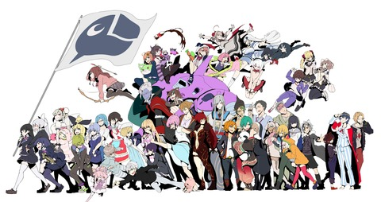

私の生きる理由
"私には趣味がある。それは私の人生に深く根ざした夢である。
カラオケ、Fate、Vtuber-----
これが我々の希望である。この希望を蜘蛛の糸にして、私は日々を生きていく。"
・・・キング牧師には申し訳ないと思っていますとも、ええ。
茶番はこのくらいにしておくとして、
はい。このページでは私の趣味について紹介します。
まず一つ目、
カラオケです。
歌っている時が一番生を感じられますね。
そして二つ目、
Fateです。
ヒロイン、セイバーは「2000年代最も金を生んだヒロイン」と言われるほどの
大ヒットを記録した人気コンテンツであります。
アプリ「Fate Grand Order」はソーシャルゲームのレベルを超えた重厚なストーリーが
おすすめなので、
興味を持ってくださった方はぜひダウンロードをしてみてください。
そして三つ目、

Vtuberです。
特に株式会社にじさんじの公式VirtualYoutTuberは
厳しいオーディションで選出されたいわば”生え抜きYouTuber”であり、
そうした配信者たちの絵を通しているからこそのエッジの効いた語り口が魅力です。